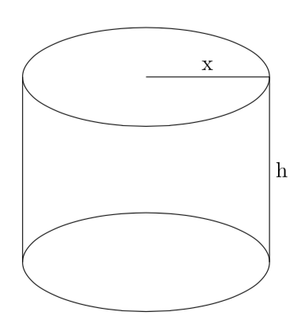

CODE
\usepackage{tikz}
\usepackage{tikz}
\begin{tikzpicture}
\draw[step=1cm,black,very thin] (0,0) grid (5,5);
\end{tikzpicture}
\begin{tikzpicture}
\draw[step=1cm,black,very thin] (0,0) grid (5,5);
\fill[blue] (1,1) rectangle (2,2);
\fill[red] (2,3) rectangle (4,4);
\end{tikzpicture}
\begin{tikzpicture}
\draw[step=1cm,black,very thin] (0,0) grid (5,5);
\fill[blue] (0,1) rectangle (1,2);
\draw (0.5,2.5) node{blue};
\fill[red] (2,3) rectangle (3,4);
\draw (2.5,4.5) node{red};
\fill[green](3,0) rectangle (4,1);
\draw (3.5,1.5) node{green};
\end{tikzpicture}
\begin{tikzpicture}
\draw (1,1) circle (1cm);
\draw[thick,->] (2,2) -- (1,1);
\draw(2.5,2.2) node{center};
\end{tikzpicture}
\begin{tikzpicture}
\draw[step=1cm,black,very thin] (0,0) grid (8,5);
\draw[thick,->](0,0) -- (8,0);
\draw[thick,->](0,0) -- (0,5);
\draw(8.5,0) node{time};
\draw(0,5.4) node{cost};
\draw[->] (0,0) -- (2,1) -- (3,3) -- (4,2) -- (5,1.5) -- (7,2) -- (8,2.5);
\draw(3,3.3) node{max};
\end{tikzpicture}
\begin{tikzpicture}
\fill[black](0,8) -- (1,8) -- (1,7.9) -- (0,7.9) --cycle;
\fill[black](0,6.6) -- (1,6.6) parabola (1.5,6.8) -- (1.6,6.8) -- (1.5,6.5) -- (0,6.5);
\fill[black](0.3,8) -- (0.5,8) -- (0.5,6.5) -- (0.3,6.5);
\fill[black](1,6.7) -- (1.7,8) -- (1.8,8) -- (2.5,6.7) -- (2.3,6.7) -- (1.7,7.8) -- (1.1,6.7);
\fill[black](1.3,7.1) -- (2.2,7.1) -- (2.1,7) --(1.2,7);
\fill[black](2,8) -- (3.5,8) -- (3.5,7.9) -- (2,7.9);
\fill[black](2.7,8) -- (2.9,8) -- (2.9,6.5) -- (2.7,6.5);
\fill[black](2.3,6.6) -- (3.2,6.6) -- (3.2,6.5) -- (2.3,6.5);
\fill[black](3.3,7.5) -- (3.3,6) -- (3.5,6) -- (3.5,7.5);
\fill[black](3.1,7.5) -- (4.2,7.5) -- (4.2,7.4) -- (3.1,7.4);
\fill[black](3.1,6) -- (4.2,6) -- (4.2,6.1) -- (3.1,6.1);
\fill[black](3.3,6.8) -- (4,6.8) -- (4,6.7) -- (3.3,6.7);
\fill[black](3.9,7) -- (4,7) -- (4,6.5) -- (3.9,6.5);
\fill[black](4.2,6) -- (4.3,6) -- (4.3,6.3) -- (4.2,6.3);
\fill[black](4.2,7.5) -- (4.3,7.5) -- (4.3,7.2) -- (4.2,7.2);
\fill[black](4.3,6.3) -- (4.4,6.3) -- (5.6,8) -- (5.5,8);
\fill[black](4.3,8) -- (4.5,8) -- (5.7,6.3) -- (5.5,6.3);
\fill[black](4.1,6.3) -- (4.6,6.3) -- (4.6,6.4) -- (4.1,6.4);
\fill[black](4.1,8) -- (4.6,8) -- (4.6,7.9) -- (4.1,7.9);
\fill[black](5.4,6.3) -- (5.9,6.3) -- (5.9,6.4) -- (5.4,6.4);
\fill[black](5.4,8) -- (5.9,8) -- (5.9,7.9) -- (5.4,7.9);
\end{tikzpicture}
Now try to reproduce this cilinder:  For the solution move te mouse over the black box on the right.
\begin{tikzpicture}
\draw(0,0) ellipse (2cm and 0.8cm);
\draw(-2,0) -- (-2,3);
\draw(2,0) -- (2,3);
\draw(0,3) ellipse (2cm and 0.8cm);
\draw(0,3) -- (2,3);
\draw(1,3.2) node{x};
\draw(2.2,1.5) node{h};
\end{tikzpicture}